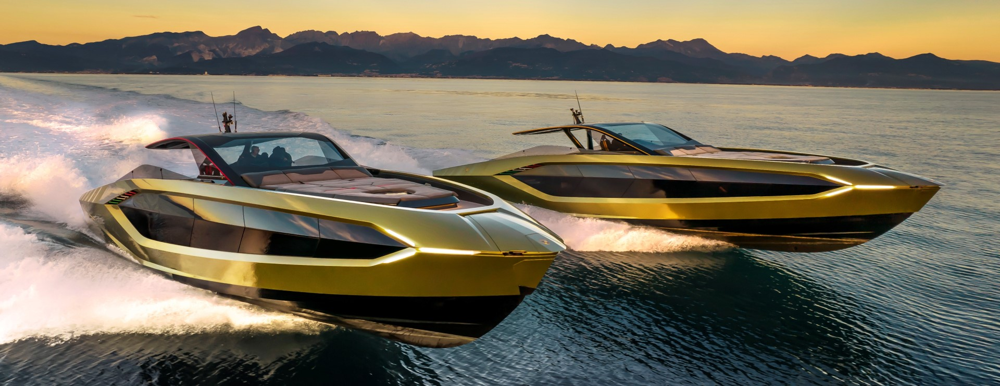

Automobili Lamborghini en The Italian Sea Group presenteren de wereldwijde première van 'Tecnomar for Lamborghini 63', het nieuwe motorjacht van de Tecnomar-vloot dat in een beperkte oplage beschikbaar is, verwijzend naar de oprichting van Lamborghini in 1963. Prestaties, rijplezier, aandacht voor kwaliteit en details, emoties: dit zijn de emotionele kenmerken gecombineerd in de Tecnomar voor Lamborghini 63, dankzij innovatieve technische oplossingen en een onderscheidend ontwerp dat uniek is voor de gedeelde Italiaanse stijl en traditie.
Dit motorjachtproject, ontwikkeld door The Italian Sea Group, begon met verschillende samenwerkingssessies met de bijdrage van Lamborghini's Centro Stile en inspiratie uit de Lamborghini Sian FKP 37: de hybride supersportwagen waarin benchmarking van nieuwe supercondensator- en materiaalwetenschappelijke technologieën is geïntegreerd, die anticipeert op de toekomst met een onmiskenbaar ontwerp en volledig aanpasbare kleuren en details.
De koolstofvezelconstructie van de Tecnomar zorgt ervoor dat het jacht in de classificatie "ultralichtgewicht" valt. Hij weegt 24 ton, is 20 meter lang en wordt aangedreven door twee V12-motoren, die elk 2.000 pk leveren. Neem voor meer informatie contact met ons op - (561) 370-7953
